Part 2 · Revised floral review · 17 November
LOCAL DRAFT · LIVE WEBSITE UNCHANGED · REMOVALS AWAIT YOUR REVIEW
This review preserves the Part 2 layout. The original pages, photographs, films, link destinations, navigation and prices remain in the draft. The five categories below are the only proposed removals.
“Proposed” screenshots combine the five removal previews with the draft additions to show the resulting spacing. They hide those items in a temporary browser view only; the items have not been deleted from the source.
Fixed headers and cookie banners are hidden in these screenshots for an unobstructed review. Their website code is unchanged. Click any screenshot for full resolution.
1Home · moving slideshow
Where: Below Selected Compositions, before the two discovery text blocks.
Would disappear: The “Composed for your world.” heading, gallery introduction, eight moving photographs (and repeated animation copies), and pause control.
Retained: The Selected Compositions cards, discovery text blocks and their links remain. All media source files are kept.
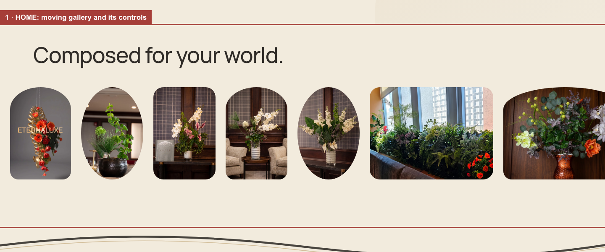
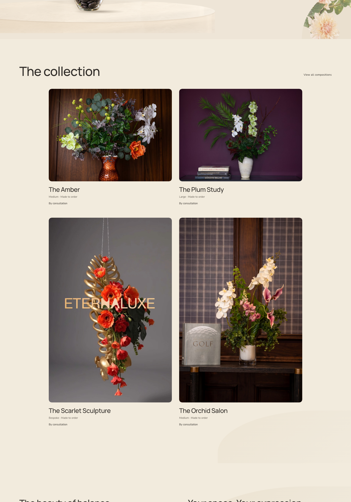
2The House · moving floral gallery
Where: After the opening film, before the philosophy section.
Would disappear: The “A world in composition.” gallery heading, introduction, 19 gallery entries (16 photographs and 3 films, plus animation copies), and pause control.
Retained: The opening film, philosophy text and stand-alone Ikebana film remain. This removes gallery occurrences, not the original media files.
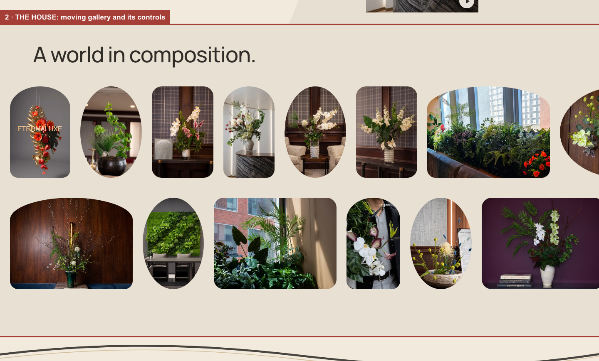

3Three black-and-champagne ribbons
Where: Home: after the moving gallery. House: before philosophy and between philosophy and Ikebana.
Would disappear: Only the three thin animated ribbon separators.
Retained: The filled architectural backgrounds, curved color fields, section text, films and venue remain. Their layouts are not being deleted.

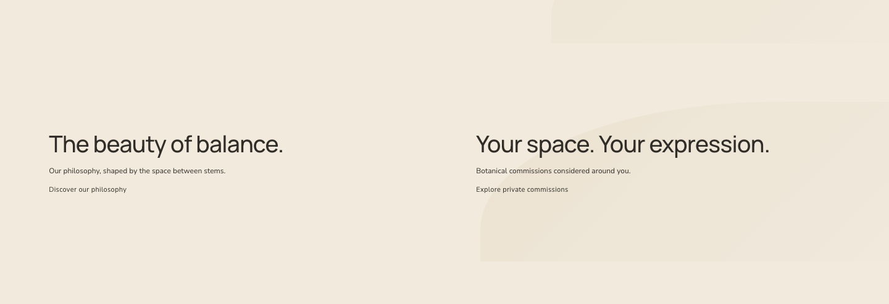
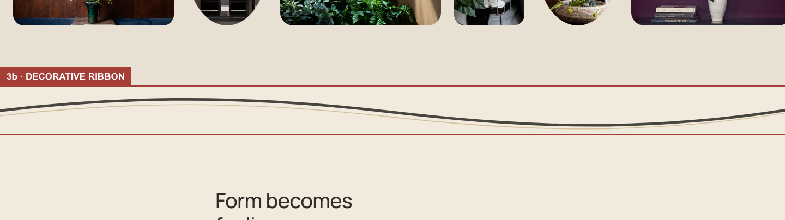
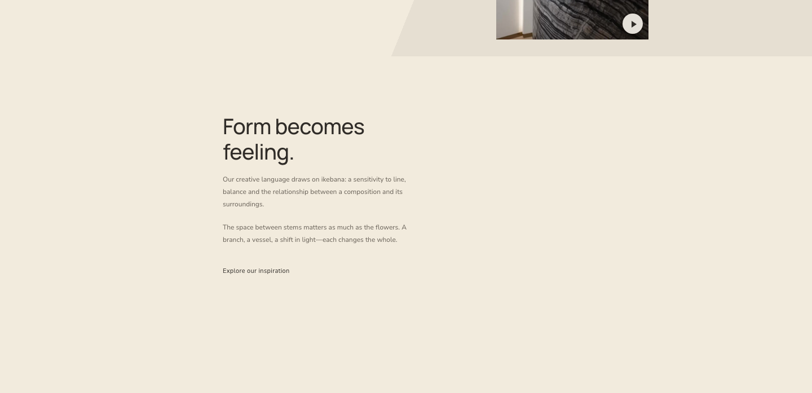
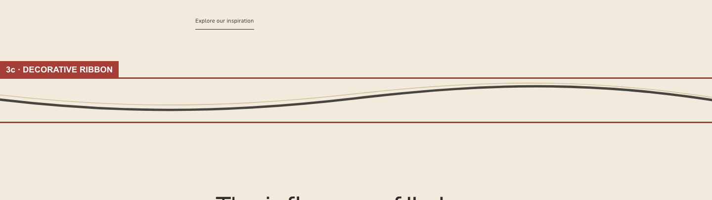
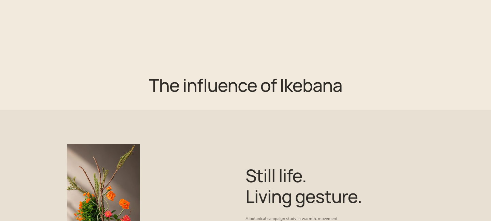
4Home · two short rules
Where: Above “The beauty of balance.” and “Your space. Your expression.”
Would disappear: Only the two short horizontal rules marked 4.1 and 4.2.
Retained: Both articles, titles, descriptions, destinations and their placement remain.
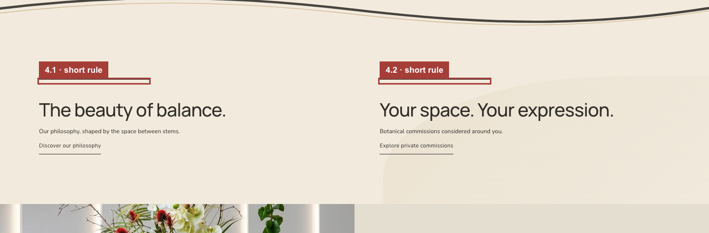
5CTA link underlines · sitewide
Where: Representative locations marked 5.1 and 5.2; full route/label inventory below.
Would disappear: The underline styling under CTA text links.
Retained: Every link and destination remains. Keyboard focus, form-field boundaries and inline policy/consent links remain.
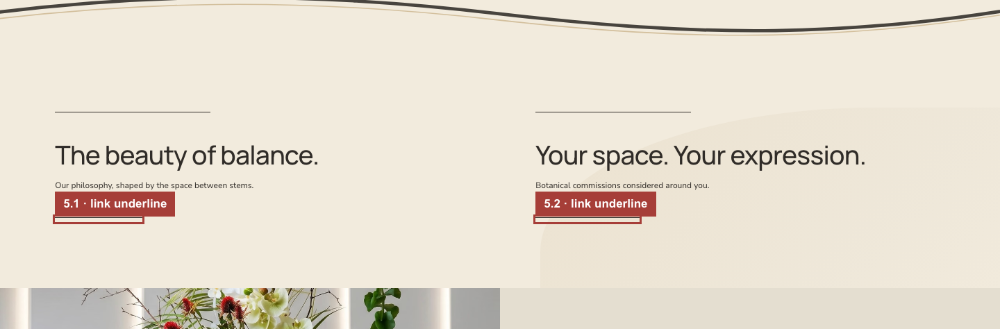

Item 5 · Every affected page and CTA label (30 pages)
This lists CTA underlines, including repeated footer and dialog links. It does not authorize deleting the links themselves.
| Page | CTA label → destination |
|---|---|
| about.html |
|
| accessibility.html |
|
| archive.html |
|
| atelier.html |
|
| bag.html |
|
| collections.html |
|
| cookies.html |
|
| enquiries.html |
|
| floral-club.html |
|
| house.html |
|
| index.html |
|
| preferences.html |
|
| privacy.html |
|
| product-amber.html |
|
| product-botanical-wall.html |
|
| product-branch-study.html |
|
| product-ceramic-study.html |
|
| product-classic.html |
|
| product-elevated.html |
|
| product-grand-prive.html |
|
| product-large.html |
|
| product-night-garden.html |
|
| product-orchid-console.html |
|
| product-plum.html |
|
| product-royal.html |
|
| product-scarlet.html |
|
| product-window-garden.html |
|
| refunds.html |
|
| shipping.html |
|
| terms.html |
|
Draft additions · existing content retained
Matching actual photographs — no added mats
Photographs are grouped by compatible proportions. Each group has matching actual image widths and heights, with small background crops and no added mat or framing shape. The homepage keeps Amber and Scarlet and adds the existing Plum Study and Orchid Salon as matching companions, as approved. Before shows the previous draft; after shows the revised matched pairs.


Collections page · grouped photograph sizes
Full Collections gallery. All 20 existing cards remain; filters and Show More still work.

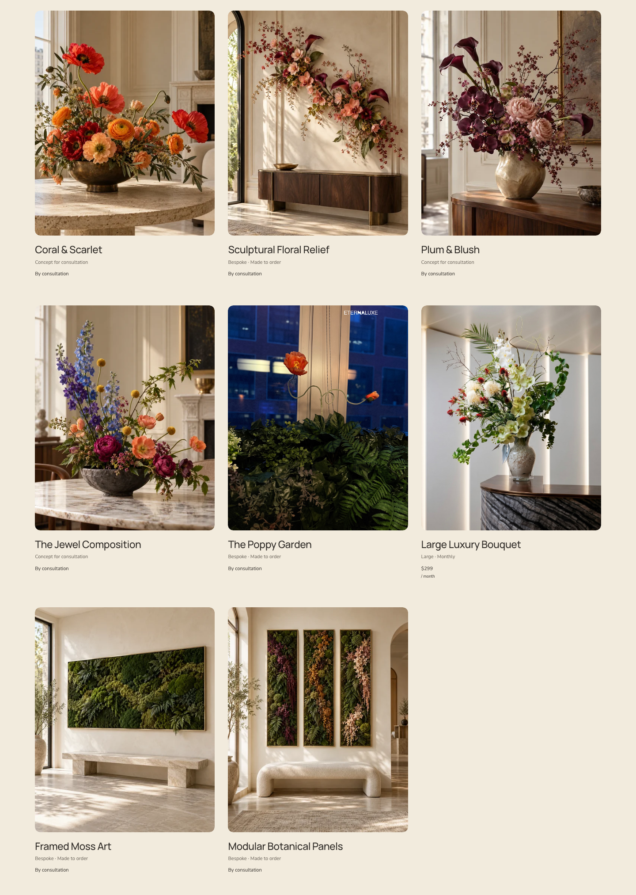
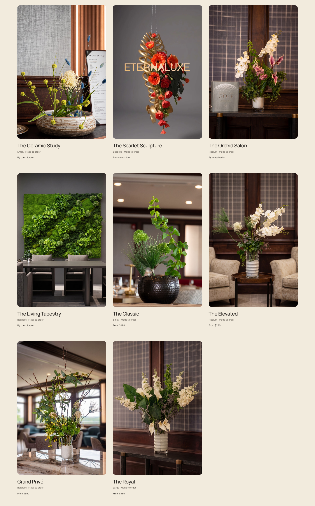
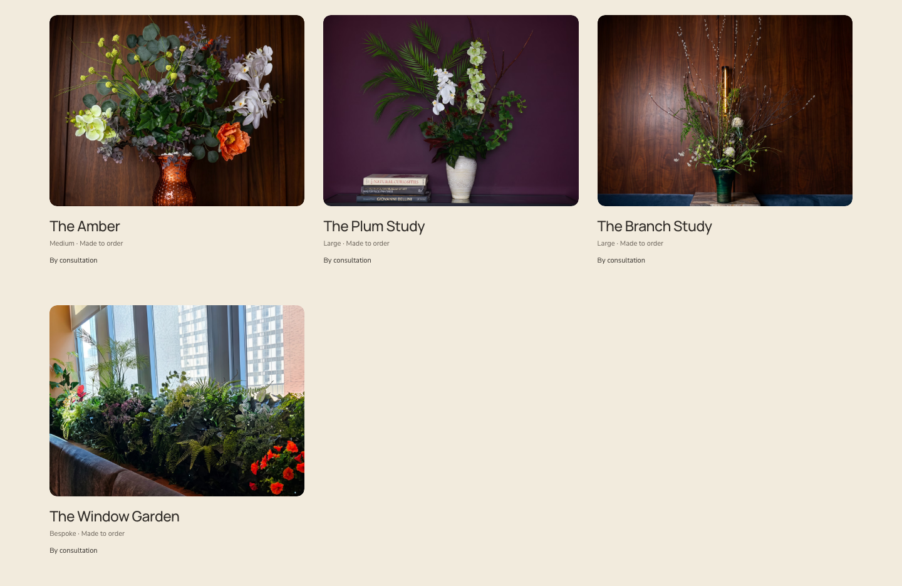
Floral Club · softened feature
The photograph itself now has lightly rounded 12px corners, without an added oval or mat. The same headline, description, $299 monthly price and CTA remain. The existing video on the Floral Club page also has slightly rounded edges; neither medium is replaced. Before shows the previous oval-backed draft.

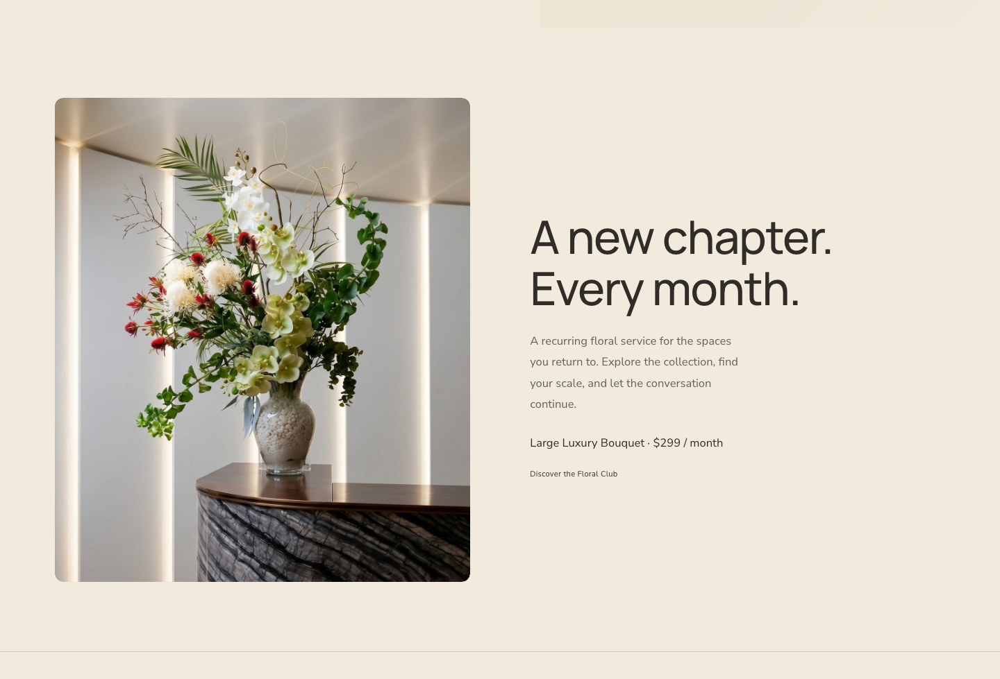
Existing Floral Club video · rounded edges

Restored floral scenes · immediately after the homepage opening statement
The blue hydrangea/orchid composition introduces the collection. The pink arrangement introduces private commissions. The backgrounds now use warm ivory, champagne and stone tones from the website instead of blue and pink fields. These are the original owner arrangements recovered from Git, with unchanged flower colors, vessels, contact shadows and surfaces. Existing sections follow in their original order. Previous blue/pink draft for comparison.


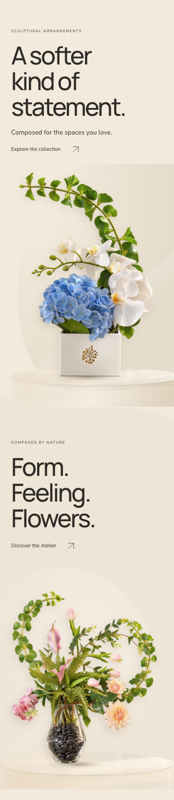
Full proposed desktop homepage · Full proposed mobile homepage · Mobile Floral Club detail


Your review
Please approve or revise items 1, 2, 3, 4 and 5 individually, or say “approve all five removals.” Any additional deletion requires another location-specific review. Nothing is published from this review.